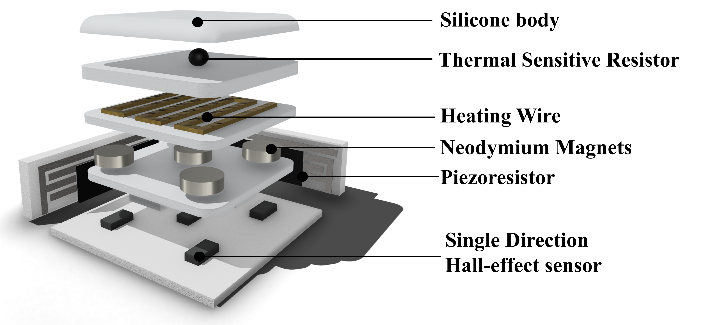
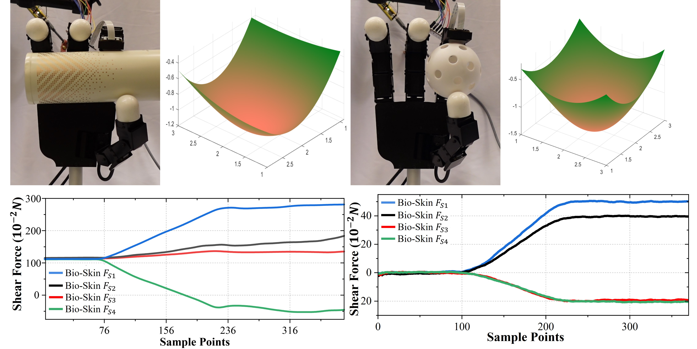

(a) Compared with the U.S. quarter dollar, Bio-Skin’s silicone body has almost same size with the coin. (b) Bio-Skin can be directly installed on commercial robot hand such as Allegro hand and Leap hand. (c) Bio-Skin maintaining human skin temperature captured by thermal camera.

Exploded view of Bio-Skin sensor, showcasing normal force, shear force, and temperature regulation layers with Hall-effect sensors, piezoresistors, magnets, heating and sensing components.

(a) Step-by-step fabrication process of Bio-Skin, including molding, assembly, and integration of key sensing components. (b) System architecture demonstrating real-time sensing, heating control, and data transmission via wired or wireless communication. (c) Calibration setup for collecting data of normal and shear force. Surface of Bio-Skin is divided into 1~9 positions and a direction converter is fixed on Bio-Skin to calibrate shear force.

The force visualization of Allegro Hand fingertip with Bio-Skin while grasping a plastic ball (right) and a metal cup (left), showing distinct normal force distribution and shear force changing.